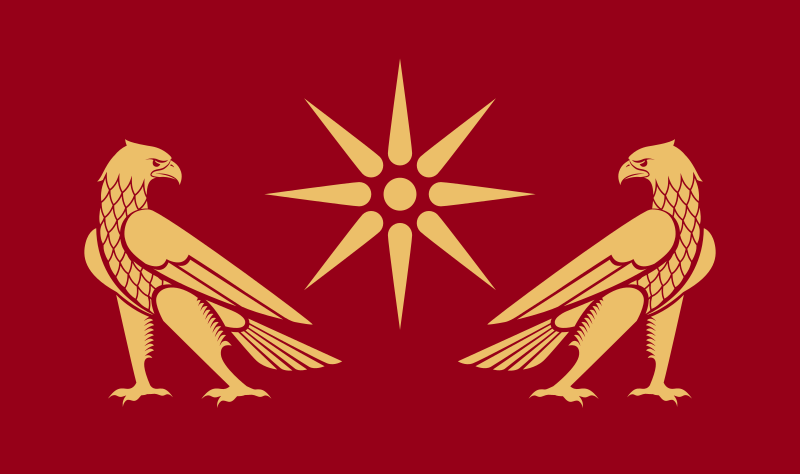
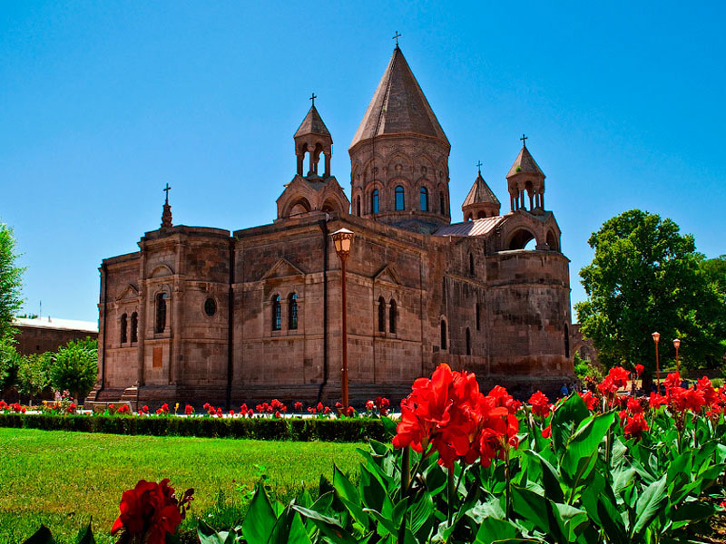
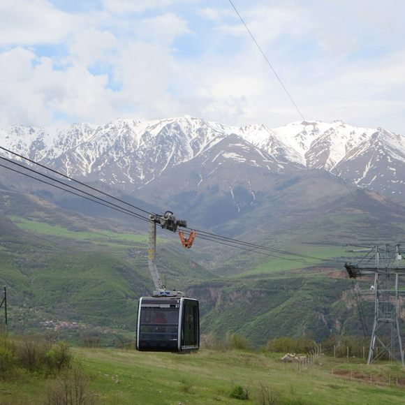
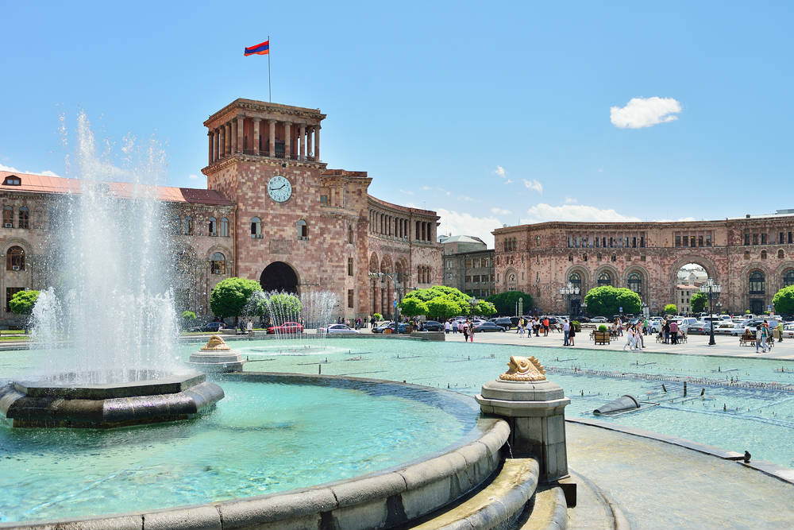

Armenia is an ancient country
Its history dates back to well before the Bronze Age and traces the beginnings of civilization. Armenia has a rich and unique heritage that is fascinating to explore. For instance, Ughtasar Petroglyphs date back to 12000 BC. The world's oldest known leather shoe dates back to 3500 BC discovered in Areni. Along with Iran, China, Greece, Egypt and Japan, Armenia is among the 6 ancient countries that has survived for thousands of years. Armenia was first mentioned in king Darius Behistun manuscript in 520 BC. Armenia was also mentioned by ancient Greek author Herodotus and Xenophon in the V century BC.

First country to adopt Christianity
Armenia is the first country to adopt Christianity as its state religion. Today, 97% of the Armenia’s population are Christians, and Armenia has one of the most beautiful churches in the world. Gregory the Illuminator (Lusavorich), who baptized Armenia in 301, became the first Catholicos of All Armenians. Armenia became the first Christian state. The first church in the world was built in Armenia. Holy Etchmiadzin was the first state church built in the world back in the early 4th century. This place is also the headquarters of all the churches in Armenia and it’s one of the most visited pilgrimage sites in the world.

Armenia has its own alphabet
There are interesting facts about Armenian language. Armenia has its own alphabet and it is one of the most advanced in the world. The Armenian alphabet was created in 405-406 AD by a scholar and monk Mesrop Mashtots. Mashtots’ alphabet consists of 36 letters. Scientists consider the Armenian alphabet to be one of the most advanced in the world. The monument to the Armenian alphabet and its creator Mesrop Mashtots is in the village of Artashavan, on the slope of Mount Aragats.
Armenia has a record-breaking cable car
This might come as a surprise but you will find the longest Aerial Tramway in the world in Armenia. According to Guinness World Records, the longest non-stop double track cable car is the Tatev Aerial Tramway, which clocks in at 5,752m (18,871ft) long. The spectacular cable car called Wings of Tatev connects the village of Halidzor with the Tatev Monastery (one of the most important monasteries in the country) offering spectacular views across the Vorotan River Gorge en route.

Yerevan is one of the oldest cities in the world
The Armenian capital, Yerevan, is one of the world’s oldest inhabited cities. Founded in 782 BC by King Argishti, it is even older than Rome! What you see now is a modern capital in the European style but the origins of the city are really impressive!
